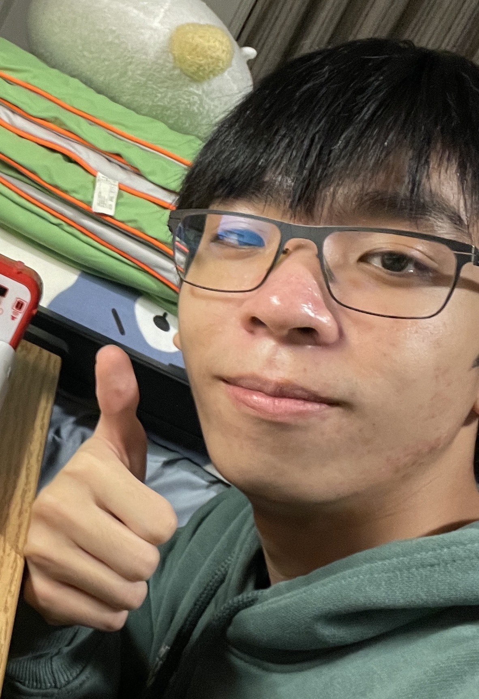

Bote Zhou

Summary
Hello! I'm currently a freshman at Stony Brook University learning to
become a web developer!
Education
Stony Brook University
August 2023 - May 2027
Stony Brook, NY
- Expected Bachelor of Science in Computer Science
- University Scholars Honor Program
LaGuardia High School
September 2019 - June 2023
New York, NY
-
Advanced Regents Diploma with Honors (Mastery in Math and Science, Arts
Endorsement)
- 4.0 GPA
-
AP World History, AP Calculus AB, AP Calculus BC, AP Physics I, Discrete
Mathematics
Work Experience
Project STEM
Java Teaching Assistant
November 2023 - Current
Remote
- Answering student and teacher questions.
-
Updating or building new course materials for the AP Computer Science A
curriculum.
- Resolving or escalating issues.
Elite Academy
Teaching Assistant
July 2023 - August 2023
Flushing, NY
- Provided one-on-one support to students.
- Graded assignments and exams, providing constructive feedback
-
Assisted in administrating mock SHSAT grade conversion using Excel
Skills
- Programming Language: Java, HTML
-
Soft Skills: Team Player, Organization Skills, Effective Time
Management, Communication Skills, Quick Learner, Independent
-
Others: Bilingual in English and Mandarin, Microsoft Excel, Google
Suites
Certifications
Responsive Web Design Certification

Java Programming I

Others